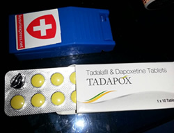

<?xml version="1.0" encoding="UTF-8"?><rss version="2.0"
	xmlns:content="http://purl.org/rss/1.0/modules/content/"
	xmlns:wfw="http://wellformedweb.org/CommentAPI/"
	xmlns:dc="http://purl.org/dc/elements/1.1/"
	xmlns:atom="http://www.w3.org/2005/Atom"
	xmlns:sy="http://purl.org/rss/1.0/modules/syndication/"
	xmlns:slash="http://purl.org/rss/1.0/modules/slash/"
	>

<channel>
	<title>男性ナイトライフ &#8211; くすりエクスプレスの教えてQ＆A</title>
	<atom:link href="https://www.kusuriexpress.com/qna/category/m-nightlife/feed/" rel="self" type="application/rss+xml" />
	<link>https://www.kusuriexpress.com/qna</link>
	<description>多くの方が気になる病気・症状の質問集</description>
	<lastBuildDate>Mon, 09 Jul 2018 01:47:48 +0000</lastBuildDate>
	<language>en-GB</language>
	<sy:updatePeriod>hourly</sy:updatePeriod>
	<sy:updateFrequency>1</sy:updateFrequency>
	<generator>https://wordpress.org/?v=4.7.5</generator>
	<item>
		<title>セックスレスのお悩み相談</title>
		<link>https://www.kusuriexpress.com/qna/%e3%82%bb%e3%83%83%e3%82%af%e3%82%b9%e3%83%ac%e3%82%b9%e3%81%ae%e3%81%8a%e6%82%a9%e3%81%bf%e7%9b%b8%e8%ab%87/</link>
		<pubDate>Wed, 13 Jun 2018 03:53:00 +0000</pubDate>
		<dc:creator><![CDATA[くすりエクスプレス]]></dc:creator>
				<category><![CDATA[女性ナイトライフ]]></category>
		<category><![CDATA[男性ナイトライフ]]></category>
		<category><![CDATA[セックス]]></category>
		<category><![CDATA[セックスレス]]></category>

		<guid isPermaLink="false">https://www.kusuriexpress.com/qna/?p=3518</guid>
		<description><![CDATA[セックスレスが増えているって本当ですか セックスレスを改善しましょう国勢調査のような大規模な調査があるわけではありませんが、(社)日本家族計画協会などの信用できる調査でも、セックスレスの夫婦が増えていることがうかがえます。最近の調査では40代の比較的若い夫婦でも40%以上が「ここ1カ月以上セックスしていない」と回答しています。... <span class="more">続きを読む</span>]]></description>
				<content:encoded><![CDATA[<h3>セックスレスが増えているって本当ですか</h3>
<p>セックスレスを改善しましょう国勢調査のような大規模な調査があるわけではありませんが、(社)日本家族計画協会などの信用できる調査でも、セックスレスの夫婦が増えていることがうかがえます。最近の調査では40代の比較的若い夫婦でも40%以上が「ここ1カ月以上セックスしていない」と回答しています。</p>
<p>その原因は夫婦の年代によって異なりますが、日本には夫婦のセックスを重要視せずに、セックスレスで当りまえとする風潮がうかがえます。しかし、夫婦のどちらかがセックスレスであることに不満をもっている場合は、当たり前ではすまない深刻な問題になります。</p>
<h3>セックスレスの定義</h3>
<p>医師や臨床心理師などが参加する日本性科学会の定義によると、セックスレスとは「1カ月以上セクシュアル・コンタクト(性的な接触)がないこと」です。「コンタクト」には性交に限らず、キスやペッティングも含まれるとされています。</p>
<p>しかし、新婚夫婦ならいざしらず40代以上の中高年夫婦では「1ヶ月」というインターバルは大変厳しい設定で、多くの夫婦がセックスレスということになりそうです。</p>
<p>セックスレスの定義は、この問題をとらえる切り口によって変わります。日本家族計画協会などでは、調査の対象も40代までの出産可能な夫婦に限られています。夫婦にとっては子づくり、社会問題としては少子化対策、というところから考えると「1ヶ月」という目安が妥当なのかもしれません。</p>
<p>子づくりは関係なく、純粋に夫婦やカップルのコミュニケーションとしてのセックスでは、どれくらいからがセックスレスかは一概には言えません。</p>
<p>ただし問題は、日本の中高年夫婦には「セックスレスで当りまえ」という風潮があって、熟年のセックスを軽視する傾向があることです。とくに夫婦のどちらかが勝手に「卒業」した気になっているのは、幸せな夫婦関係とは言えません。</p>
<h3>セックスレスになる原因やきっかけは何ですか?</h3>
<p>(社)日本家族計画協会の調査によると、結婚している男女がセックスに積極的に慣れない理由として、次のようなものが多くあげられています。</p>
<p><strong>男性の場合</strong><br />
・仕事で疲れている 28.2%<br />
・妻の出産後何となく 20.5%<br />
・面倒くさい 12.0%</p>
<p><strong>女性の場合</strong><br />
・面倒くさい 23.5%<br />
・出産後何となく 20.5%<br />
・仕事で疲れている 19.3%</p>
<p>同協会が調査対象にしているのが20~40代の男女なので、50代以上の夫婦や男女ではまた別の理由があげられると予想されます。</p>
<p>しかし、上にあげられた理由はよく考えてみると、「理由」になっていません。夫婦でのセックスに新鮮さがなくなって、したいと思う気持ちが強くないから「面倒くさい」「なんとなく」「疲れているから」が理由にあがってくるのだと考えなければなりません。</p>
<p>だとすると「新婚じゃああるまいし」という、ある意味でもっともな理由からセックスの回数も減ってくるとも言えます。それにしても、年齢にもよりますが1年も2年もセックスレスというのは、望ましいことではありません。</p>
<p>夫婦仲は悪くないが、性的対象としてはどこか嫌悪感があるという場合は少なくありません。性格的にどうしても合わないことがはっきりした、というような例は深刻で、こじれると話がセックスレスだけに終わらない可能性もあります。</p>
<p>セックスレスを当たり前とするのは日本の中高年夫婦の悪い癖です。夫婦の幸福感の向上にはセックスを含めた夫婦のパートナーシップを見直してみることも大切です。</p>
<h3>セックスレスは悪いことなのですか?</h3>
<p>セックスレスは男女や夫婦の年齢によって、生じてくる問題点も違ってきます。</p>
<p>・結婚前のカップルのセックスレス　―　晩婚化、非婚化<br />
・若い夫婦のセックスレス　―　不妊、少子化、幸福感の低減、離婚<br />
・中高年夫婦のセックスレス　―　幸福感の低減、相互無理解、熟年離婚</p>
<p>子育ても終わった中高年夫婦の場合は、何となくセックスに遠ざかっていても不自然ではなく、夫婦仲に問題が生じることもなさそうですが、あまりそれを当然視するのは問題です。</p>
<p>とくに夫が「家族でそんなことエッチなことができますか」などと冗談めかして言うのは、無神経で妻に対する思いやりにかける行為です。しかし、1ヶ月に1度はしなければならないなど杓子定規なインターバルを設定するのも、お互いに気持ちの上の負担が大きくなります。</p>
<p>いちばん大切なことは中高年になっても「セックスがありうる男と女」だということを認め合うことです。そしてそれが1年に1回でも何かの機会に実際のセックスにつながることがあれば、セックスレスとは言えません。</p>
<p>しかし日本には、50代、60代の夫婦がセックスレスで当りまえだという観念が広がりすぎているのも事実です。そういう通念に隠れて何となく不満を募らせいている夫や妻は案外多いのです。</p>
<h3>セックスレスは離婚や浮気の原因になりますか?</h3>
<p>20代、30代の若い夫婦で、妻が夫の誘いを断る、あるいは夫が妻の誘いを断るという形でセックスレス(セックス拒否)が続くと、ほとんどのケースで深刻な事態を招きます。</p>
<p>拒否された方はプライドを傷つけられ、心に簡単には癒しがたい傷を負います。その理由だけで即離婚には結びつかないかもしれませんが、それが浮気に発展した場合はもちろん、そうでなくても性格的な不一致など何かもう1つ理由が加わると、簡単に離婚話に結びつきます。</p>
<p>セックス拒否から浮気、離婚というコースをたどった場合でも、共通しているのはほとんどの場合セックスを拒否している側は事の大きさを自覚しておらず、まさか離婚にまで発展するとは思っていないことです。</p>
<p>夫の側のセックス拒否にはED（勃起不全・勃起力低下）を妻に打ち明けられずに、というケースがままあります。わざと寝る時間をずらしたりしているうちに、妻の不安と不信感を募らせるなどです。その中にはED治療薬を飲むだけで解決してしまうものもあるのに、知識不足も相まってずるずると問題を深刻化させていることがあります。</p>
<p>中高年になってからのセックスレスは、すぐ離婚に結びつくようなことはないでしょうが、どちらかが拒否をしている場合は、拒否された方が傷つくのは若い夫婦とまったく変わりありません。</p>
<p>お互いになんとなくというセックスレスではなく、一方が拒否するかたちでのセックスレスは結婚生活を壊しかねない重大な影響を与えることがあります。</p>
<h3>セックスレスを解消するには</h3>
<p>セックスレスの解消は当然ながらその原因から考えなければなりません。セックスレスの原因として良くあげられる、</p>
<p>・仕事が忙しくて疲れている<br />
・出産後のセックスの中断からなんとなく<br />
・家庭での役割が「男女」から「父母」にシフトして</p>
<p>はそれぞれに解決法も異なるはずです。</p>
<p>しかし、たとえは適切でないかもしれませんが、食べすぎの人にダイエットしてもらう方法はいろいろあるが、食欲のない人に食べさせるのはそれよりずっと難しいといえます。セックスレスを解消する難しさもそこにあります。</p>
<p>とくにセックスは誘われるとよけいしたくなくなるという、やっかいな性質もあるので、一朝一夕に解決とはいかないことが多いのです。</p>
<h3>忙しすぎる夫とのセックスレスを解消するには?</h3>
<p>夫の仕事が忙しく、夜遅く帰宅して朝もふつうに出勤となると、セックスの機会もなかなかありません。週末も疲れを取るためにゴロゴロしているだけ、ということになりがちです。</p>
<p>妻がさみしい気持ちや不満をもらすと、夫からは「仕事への無理解」と思われがちです。夫には家族のために仕事をしているのにという気もあるし、仕事への責任感もあります。何よりも本当に「疲れている」というのがこの問題のやっかいなところです。</p>
<p>したがって「それはさておいて」という対策は、あまり効果が期待できません。妻も夫が疲れているということに真剣に向き合う必要があります。</p>
<p>例えば1ヶ月の残業時間が100時間を超えるような「ブラック企業」的にハードな仕事をしているような場合には、セックスレスどころではなく夫が壊れてしまうこともあります。</p>
<p>男性は男性で自分の仕事に対する視野が狭くなることはありがちなので、そういう男性のぎりぎりの健康管理はある意味で妻の役目です。「そんな仕事辞めましょうよ」という妻の一言で夫がわれに返るということもあるのです。</p>
<p>もちろんこういうのは極端な例ですが、「疲れている夫が家庭でどう効率的に疲れを取ることができるか」をまず考えて、そのなかにセックスレス対策も位置づけていくという発想が必要です。</p>
<p>「疲れている」が口実に使われていることもあるでしょうが、お互いの身勝手がぶつかりあうと「たかがセックスレス」も重大な問題に発展します。お互いに少しずつの思いやりがあるのとでは天と地の違いになります。</p>
<h3>産後セックスレスの解消法は?</h3>
<p>出産後しばらくセックスがおあずけになるのは仕方ありませんが、そのまま何となくセックスレスになってしまうということがあるので気をつけないといけません。</p>
<p>産後セックスレスになるきっかけで多いのは、子育てストレスです。とくにおばあちゃん世代がいない核家族の第1子となると、経験のないお母さんのストレスはとても大きくなります。まだ夜と昼の区別がつかない乳児の授乳でふらふらになってしまうのです。</p>
<p>そのときに夫が協力的なら妻の負担が軽減し、なにより精神的なストレスを抱えずにすみます。しかし夫自体が幼児的で、赤ん坊にかまけてセックスにも応じない妻に不満を持ってイライラをぶちまけたりするようだと「産後セックスレス」がこじれてきます。</p>
<p>(社)日本家族計画協会の調査でも、セックスレスになるきっかけとして「産後なんとなく」が上位にあげられています。しかし実は「なんとなく」ではなく、夫が子育てに非協力的で妻のストレスが大きくなっているケースがたいへん多いのです。</p>
<p>慣れないパパの役割もママの役割もそれなりにストレスフルですが、ベビーが可愛いというなによりのご褒美あるので、お互いの協力があれば乗り切れます。まだ若い二人ですから産後のセックスレスが長びくこともありません。</p>
<h3>「お父さんお母さん」から「男と女」へ戻る方法は?</h3>
<p>子どもが思春期を迎えるころは、夫婦は男と女というよりはお父さんのお母さんの役割が圧倒的に優勢になります。</p>
<p>・子どもが精神的に安定しない時期で問題を起こしやすい。<br />
・教育費が高額になり経済的に苦しい時期にあたる。<br />
・夫も妻も40代の中年期にさしかかる。</p>
<p>いわば夫婦関係の胸突き八丁のようなときで、子どもが大学を卒業するころまでは「男と女」という関係はしばらくおあずけになることもめずらしくありません。それどころか、子どもが思春期のころは家庭では性的な話題はタブーになるのが普通です。家族でテレビを見ているときに、きわどい場面が出たときの気まずい雰囲気は、誰にも経験があります。</p>
<p>そんな訳で、まさにお互いの呼び名も「お父さん」と「お母さん」で20年も過ぎると、子どもたちが独立して家を出た後二人きりになったからと言って、すんなり「男と女」にもどれないのも無理はありません。</p>
<p>このような中高年夫婦で多いのは、非常に仲が良くお互いに理解もあるが、性的には多少の嫌悪感があるというケースです。嫌悪感という言葉はきついイメージがありますが、お父さんとお母さんという「仮面」があまり身につきすぎて、逆に男と女を出すことの抵抗感が強くなっているのです。</p>
<p>その抵抗感を取りのぞくもっともシンプルな方法は、旅行などの日常生活から離れたシチュエーションを作ることです。昔JRがハネムーンならぬフルムーンという第二の新婚旅行をPRしたことがありましたが、あまりに恥ずかしいネーミングなのでいつの間に消えてしまいました。そんな余計な理屈付けをしないで、シンプルに夫婦で旅行してみるのはいかがでしょうか。</p>
<h3>結婚前の恋人セックスレスの解消法は?</h3>
<p>雑誌などで恋人同士のセックスレスについて特集しているものをときどき目にするようになりました。ネットの相談サイトにも、同棲相手とセックスレスだがこのまま結婚してもいいのか、というような相談が寄せられています。</p>
<p>付き合いが長くなって男性から求められることがなくなった、というパターンの悩みが多いようですが、これもいわゆる「草食男子」が増えたという話の流れで解釈するべきことなのでしょうか。</p>
<p>実態があるのかないのか分からない「草食男子」という言葉の陰に、若年層の非正規雇用化、貧困化というシビアな現実があることを指摘する人もいます。若い男性が「恋愛・結婚・子育て」というふつうのコースをあきらめて、恋愛はするが結婚はしない、あるいは結婚はするが子どもは作らないと決めているケースがあるといいます。</p>
<p>婚前セックスレスの根底にそういう男性の「あきらめ」があるとしたら、結婚してからセックスレスが解消することは期待薄です。そもそもそういう男性の考えに賛成している場合以外は、結婚も考え直す必要があります。</p>
<p>「永すぎた春」という言葉がありますが、恋愛関係が長くてセックスレスになった、同棲期間中にセックスレスになったという場合は、結婚してから性生活が活発になるということは考えにくいことです。</p>
<p>お互いにセックスはあまり好きじゃないという場合は別にして、どちらかがセックスあり、子どもも欲しいというふつうの結婚生活を望む場合は、相手を変えるという選択もありでしょう。</p>
<p>もちろん、恋愛関係にある女性が長い期間セックスを拒否しているという状況も、そのまま結婚に進むのは心配です。どうして女性が嫌がっているのかはっきりさせないことには仕方ありません。</p>
<p>一方だけが拒否している婚前セックスレスは、解消法がどうというより恋愛関係を続ける意味があるのかどうかから勇気をもって考えた方がよいでしょう。</p>
<h3>相手を傷つけず、自分も傷つかない「誘い方」は?</h3>
<p>結婚前ならセックスへの誘いは、男性は誘われるような拒否されるような、女性は逃げるような待っているような「かけひき」があたりまえで、それが欲望を刺激する薬味のようなものでした。これはある意味で哺乳類に共通の性行動で、人間も無関係ではありません。</p>
<p>しかし、結婚してセックス公認の関係になるとこの「薬味」というか、ゲーム性がなくなります。これはとくに男性にとってはそれほどセックスに熱心ではなくなる大きな原因になります。浮気の虫が治まらない男性はセックスそのものより、この薬味やゲーム性を求めているのです。断られるかもしれないから誘いたくなる、というのが男です。</p>
<p>しかし、それが夫婦の間では別になります。断られると「なんでや」という不満だけが残ってしまうのです。欲望を刺激されることが少なくなっているのですから、そんなことがきっかけでたやすくセックスレスになってしまうこともあります。</p>
<p>したがって、問題の本質は「誘い方のテクニック」ではなく、誘ってみたくなる意外性や、完全にはあけっぴろげになっていない秘密性、馴れきってはいないつつしみなどがお互いにあることです。</p>
<p>いまさらそんなことを言われても困る、という気持ちはよく分かりますが、「欲望」はそういうことでしか刺激されないというのも事実です。セックスは誘われるとうんざりするというやっかいなもので、その誘い方がうまいとかヘタとかいう問題ではありません。</p>
]]></content:encoded>
			</item>
		<item>
		<title>タダポックス体験談【20代男性】</title>
		<link>https://www.kusuriexpress.com/qna/%e3%82%bf%e3%83%80%e3%83%9d%e3%83%83%e3%82%af%e3%82%b9%e4%bd%93%e9%a8%93%e8%ab%87/</link>
		<pubDate>Thu, 25 Jan 2018 01:01:22 +0000</pubDate>
		<dc:creator><![CDATA[くすりエクスプレス]]></dc:creator>
				<category><![CDATA[ナイトライフ商品体験談！]]></category>
		<category><![CDATA[早漏]]></category>
		<category><![CDATA[男性ナイトライフ]]></category>
		<category><![CDATA[タダポックス]]></category>
		<category><![CDATA[体験談]]></category>

		<guid isPermaLink="false">https://www.kusuriexpress.com/qna/?p=1802</guid>
		<description><![CDATA[この度はクスリエクスプレスにてＥＤ治療薬と早漏治療薬を購入してみました。商品名はタダポックス。成分はＥＤ治療成分シリアス系タダラフィル20mgと早漏治療薬ダポキセチンです。 この商品を選んだ理由はＥＤではないですが、パートナー女性が３回以上行為を求めて来ていましたが、自力だと２回目３回目となると硬さが足りなく、３回目だとほぼ行為が不可能になってしまうので、回数の為にＥＤ治療薬も欲しかったですし、パートナーがこちらのクスリエクスプレスでピルを購入してお世話になっているため、生での行為につき私が先に気持ちよくなってしまい早漏気味なので早漏治療成分のミックスされているこちらを購入して見ました。... <span class="more">続きを読む</span>]]></description>
				<content:encoded><![CDATA[<figure style="width: 250px" class="wp-caption alignnone"><figcaption class="wp-caption-text">タダポックスご投稿写真</figcaption></figure>
<p>この度はクスリエクスプレスにてＥＤ治療薬と早漏治療薬を購入してみました。商品名は<a href="../../../../products/%E3%82%BF%E3%83%80%E3%83%9D%E3%83%83%E3%82%AF%E3%82%B9(ED%E6%B2%BB%E7%99%82%E3%83%BB%E6%97%A9%E6%BC%8F%E6%94%B9%E5%96%84)1%E7%AE%B1/index.html">タダポックス</a>。成分はＥＤ治療成分シリアス系タダラフィル20mgと早漏治療薬ダポキセチンです。</p>
<p>この商品を選んだ理由はＥＤではないですが、パートナー女性が３回以上行為を求めて来ていましたが、自力だと２回目３回目となると硬さが足りなく、３回目だとほぼ行為が不可能になってしまうので、回数の為にＥＤ治療薬も欲しかったですし、パートナーがこちらのクスリエクスプレスでピルを購入してお世話になっているため、生での行為につき私が先に気持ちよくなってしまい早漏気味なので早漏治療成分のミックスされているこちらを購入して見ました。</p>
<p>商品到着までは一週間未満くらいで届きました。</p>
<p>よく、インターネットでのＥＤ治療薬は偽物が多いなどとの評判もありますが、クスリエクスプレスさんはパートナーもピルを購入していますし、こちらの商品を購入するまえに私が早漏対策で局所麻酔薬の塗り薬を購入して確かな商品だと確信していましたし、メールでキャンペーン情報が届いて、局所麻酔薬だと感度が鈍ってしまいますし効き目も１時間ほどでなくなってしまうので購入を考えていました。</p>
<p>初回、使用した状況と感想としては、服用は食後１時間で合わせて購入したピルカッターで半分に割り服用しました。</p>
<p>その後、缶ビールを一本のみましたが、これが良くなかったようで、行為が終わった直後からひどい船酔いのような感覚になり、強い嘔吐感があり、結局嘔吐しました。ですのでタダポックスはお酒との併用はお勧めしません。</p>
<p>また、色々自分で検索したところ早漏治療成分のダポキセチンはＳＳＲＩという坑鬱薬でして、基本的にお酒との組み合わせはご法度のようです。</p>
<p>嘔吐した後回復したので２回戦目に突入。笑</p>
<p>しかしタダポックスの効果で全くいけませんでした！１回戦目もいつもの何倍もピストン運動しても全く絶頂感に到達せず、パートナーの女性はかなりぐったりしていました。</p>
<p>時間を置いて３回戦目も突入しましたが、自分はいかずにパートナーはピストン運動中に大量に吹いていました！今までにない運動量でかなり相手は満足していました。</p>
<p>２回目の服用は初回のお酒との相性なのか薬との相性での嘔吐だったのか試す為に四分の１にカットして服用し、お酒も飲みませんでした。すると私の場合は吐き気もなく、薬の効果もちゃんとでましたので、それからは四分の１にカットして服用しています。</p>
<p>私の感度としてはビンビンの勃起状態と早漏治療薬の効果だと思いますが、若干感度は落ちますが気持ち良いですよ！本当に今までもっとパートナーに喜んでほしいと悩んでいましたが、この薬のおかげでとても楽しい夜の生活を送れています。</p>
<p>また、副作用として下痢などの症状がインターネットの検索での体験談でヒットしますが、私にはその様な副作用はありません。しかし、胃には負担がかかるようで、胸焼けや、逆流性食道炎のような症状がでましたが、服用時に胃薬と一緒に服用するとかなり楽になります。</p>
<p>まとめると、私の場合はこの薬を服用することにより、回数を重ねても勃起力は十分で勃起の感じは本当に自然な若かりし頃の勃起力のような感覚です。</p>
<p>早漏についてはかなりの効果を実感できます。生でやっても激しく動いても全然余裕です。</p>
<p>気をつけるべき点は服用するときはアルコールは禁物ということだけを気をつけたら私の場合は問題ありません。</p>
<p>とても良い買い物をしました！今度は早漏成分の入っていない<a href="../../../../categories/ED%E6%B2%BB%E7%99%82%E8%96%AC/%E3%82%B7%E3%82%A2%E3%83%AA%E3%82%B9%E7%B3%BB/index.html">シリアス系</a>のみの薬も試してみたいなと思っています！</p>
<p>とにかく、回数を重ねたい、早漏をどうにかしたいという方は１０錠で３０００円ほどのコスパも最強のこちらのタダポックスを試して見る価値はあるとおもいます。</p>
]]></content:encoded>
			</item>
		<item>
		<title>更年期障害はどんな症状が起きる病気ですか？</title>
		<link>https://www.kusuriexpress.com/qna/%e6%9b%b4%e5%b9%b4%e6%9c%9f%e9%9a%9c%e5%ae%b3%e3%81%af%e3%81%a9%e3%82%93%e3%81%aa%e7%97%87%e7%8a%b6%e3%81%8c%e8%b5%b7%e3%81%8d%e3%82%8b%e7%97%85%e6%b0%97%e3%81%a7%e3%81%99%e3%81%8b%ef%bc%9f/</link>
		<pubDate>Thu, 22 Jun 2017 08:26:05 +0000</pubDate>
		<dc:creator><![CDATA[くすりエクスプレス]]></dc:creator>
				<category><![CDATA[ED（勃起不全）]]></category>
		<category><![CDATA[更年期]]></category>
		<category><![CDATA[男性ナイトライフ]]></category>
		<category><![CDATA[男性ホルモン]]></category>
		<category><![CDATA[男性更年期]]></category>
		<category><![CDATA[ED]]></category>
		<category><![CDATA[エストロゲン]]></category>

		<guid isPermaLink="false">https://www.kusuriexpress.com/qna/?p=534</guid>
		<description><![CDATA[更年期障害は2～3割で女性に多い病気です。 ただ、男性にも同様の更年期があり、最近ではLOH症候群と呼ばれ、男性ホルモン（テストステロン）が加齢や生活習慣で低下して、うつ病、やる気の低下、勃起不全、不眠などの症状が現れます。... <span class="more">続きを読む</span>]]></description>
				<content:encoded><![CDATA[<p>更年期障害は2～3割で女性に多い病気です。</p>
<p>ただ、男性にも同様の更年期があり、最近ではLOH症候群と呼ばれ、男性ホルモン（テストステロン）が加齢や生活習慣で低下して、うつ病、やる気の低下、勃起不全、不眠などの症状が現れます。</p>
<p><strong>女性の場合は更年期障害には<a href="../../../../categories/%E7%94%B7%E5%A5%B3%E3%81%AE%E6%9B%B4%E5%B9%B4%E6%9C%9F%E3%83%BB%E3%83%9B%E3%83%AB%E3%83%A2%E3%83%B3%E5%89%A4/%E5%A5%B3%E6%80%A7%E3%83%9B%E3%83%AB%E3%83%A2%E3%83%B3%E5%89%A4/index.html">女性ホルモン剤（エストロゲン）</a>の補充で治療しますが、男性の場合は<a href="../../../../categories/%E7%94%B7%E5%A5%B3%E3%81%AE%E6%9B%B4%E5%B9%B4%E6%9C%9F%E3%83%BB%E3%83%9B%E3%83%AB%E3%83%A2%E3%83%B3%E5%89%A4/%E7%94%B7%E6%80%A7%E3%83%9B%E3%83%AB%E3%83%A2%E3%83%B3%E5%89%A4%EF%BC%88%E3%83%86%E3%82%B9%E3%83%88%E3%82%B9%E3%83%86%E3%83%AD%E3%83%B3%EF%BC%89/index.html">男性ホルモン剤（テストステロン）</a>を補充して治療します。</strong></p>
<p>女性の場合は閉経年齢が平均50歳なので、45歳から50歳程が更年期にあてはまるでしょう。</p>
<p>更年期を迎えると卵巣機能が低下すると女性ホルモンも減って、ホルモンの乱れから視床下部を刺激することで、体や精神的な症状が出てきてしまいます。</p>
<p>身体的症状だと顔のほてりや汗の分泌が目立つ「ホットフラッシュ」という症状が代表的です。</p>
<p><a href="../../../../categories/%E7%94%B7%E5%A5%B3%E3%81%AE%E6%9B%B4%E5%B9%B4%E6%9C%9F%E3%83%BB%E3%83%9B%E3%83%AB%E3%83%A2%E3%83%B3%E5%89%A4/index.html"><br />
</a></p>
<p>これは<a href="../../../../categories/%E5%A5%B3%E6%80%A7%E3%83%9B%E3%83%AB%E3%83%A2%E3%83%B3%E5%89%A4/index.html" target="_blank" rel="noopener noreferrer">女性ホルモンのエストロゲン</a>が減ったことで自律神経のバランスが乱れ、その影響で血液循環の働きが狂ってしまうことが関係しています。</p>
<p>他にも動機や頭痛、肩こり、めまいなどの症状もあります。</p>
<p>一方、精神的症状はイライラしやすく、憂鬱感や不安感、意欲低下などが代表的で、身体症状と同時に発症するケースが多いです。</p>
<p>なお、近年は20代から30代にも見られる更年期障害が増加しています。</p>
<p>若年層の場合は生理前後に起きる「PMS」と思い込むことがありますが、ホットラッシュの症状があれば若年性更年期障害の可能性が高いです。</p>
<p><strong>そして、更年期障害は男性もホルモン低下により発症するケースが認知されはじめ、男性の場合は性欲減退やEDなど男性特有の身体症状や女性と同様の精神的症状があらわれます。</strong></p>
<ul>
<li><a href="../../../../categories/ED%E6%B2%BB%E7%99%82%E8%96%AC/index.html" target="_blank" rel="noopener noreferrer">ED治療薬はこちらから＞＞</a></li>
</ul>
<p>今や更年期は年代や性別を問わずに引き起こってしまうのです。</p>
]]></content:encoded>
			</item>
	</channel>
</rss>

<!-- Localized -->